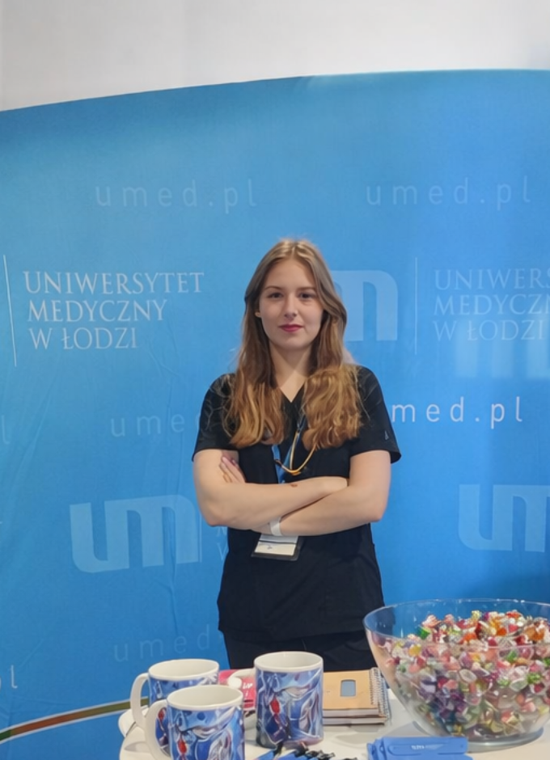
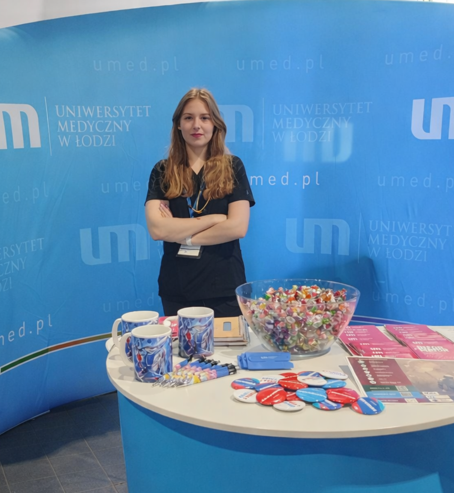

barczuk.pl · celllab.eu
Julia Barczuk
Early-career researcher focused on neuroinflammation, neurodegeneration, and cellular mechanisms relevant to Alzheimer’s disease.
This website brings together publications, research interests, academic activity, and contact information in one clear place.

About
Research profile shaped by laboratory science and neurodegenerative disease research
Julia Barczuk develops her academic work in biomedical science, with particular interest in molecular and cellular mechanisms associated with neuroinflammation and neurodegeneration.
Her research includes work on microglial biology, inflammatory pathways and experimental models relevant to Alzheimer’s disease.
In addition to her work at the Medical University of Lodz, she is also affiliated with the Laboratory of Molecular Neuroscience at the German Center for Neurodegenerative Diseases (DZNE) in Berlin.
Research focus
Current areas of scientific work
Her current work brings together molecular neuroscience, cell-based research and experimental approaches relevant to neurodegenerative disease.
- Neuroinflammation and microglial activation
- Neurodegeneration and Alzheimer’s disease
- Laboratory-based biomedical investigation
- Academic and institutional engagement
Research themes
Key scientific areas
Julia’s work is presented here through the themes that define her current scientific profile.
Neuroinflammation
Research focused on inflammatory signaling, microglial activation and cellular responses relevant to neurodegenerative disease.
Neurodegeneration
Work addressing molecular and cellular mechanisms linked to Alzheimer’s disease and related neurodegenerative processes.
Laboratory research
Experimental biomedical work involving in vitro models, cell-based studies and mechanistic laboratory investigation.
Publications
Selected publications
2025
It must have been network (percolation for the synaptic function)
Perspective-style publication indexed in PubMed, representing the most recent item currently visible in the search results associated with Julia Barczuk.
2024
Noradrenaline Protects Human Microglial Cells (HMC3) Against Apoptosis and DNA Damage Induced by LPS and Aβ 1-42 Aggregates In Vitro
A publication closely aligned with Julia Barczuk’s core research direction, combining neuroinflammation, microglia and experimental in vitro investigation.
2024
Potential Mechanisms of Tunneling Nanotube Formation and Their Role in Pathology Spread in Alzheimer's Disease and Other Proteinopathies
Review-oriented work linking neurodegenerative disease mechanisms with intercellular communication pathways relevant to pathology propagation.
2023
PI3K/Akt/mTOR Signaling Pathway in Blood Malignancies — New Therapeutic Possibilities
Review article showing broader engagement with signaling pathways and translational biomedical topics beyond neurodegeneration alone.
2022
Targeting NLRP3-Mediated Neuroinflammation in Alzheimer's Disease Treatment
An earlier publication clearly anchoring Julia Barczuk’s profile in Alzheimer’s disease and inflammation-related therapeutic perspectives.

Academic activity
Academic activity and institutional engagement
Alongside publications, this section reflects conference participation, institutional presence and wider engagement in academic life.
The photograph from the Medical University of Lodz complements the research record with a direct view of Julia Barczuk’s active role in the university setting.
Research profiles
Profiles and academic references
Selected profiles and publication databases provide direct access to indexed work and academic presence.
Contact
Contact for academic matters and collaboration
For research-related communication, academic collaboration, speaking opportunities or institutional contact, please use the details below.
Name
Julia Barczuk
Affiliations
Medical University of Lodz
Department of Clinical Chemistry and Biochemistry Laboratory of Molecular Neuroscience, German Center for Neurodegenerative Diseases (DZNE), Berlin, Germany
Department of Clinical Chemistry and Biochemistry Laboratory of Molecular Neuroscience, German Center for Neurodegenerative Diseases (DZNE), Berlin, Germany
Email
julia@celllab.eu
Location
Lodz, Poland · Berlin, Germany